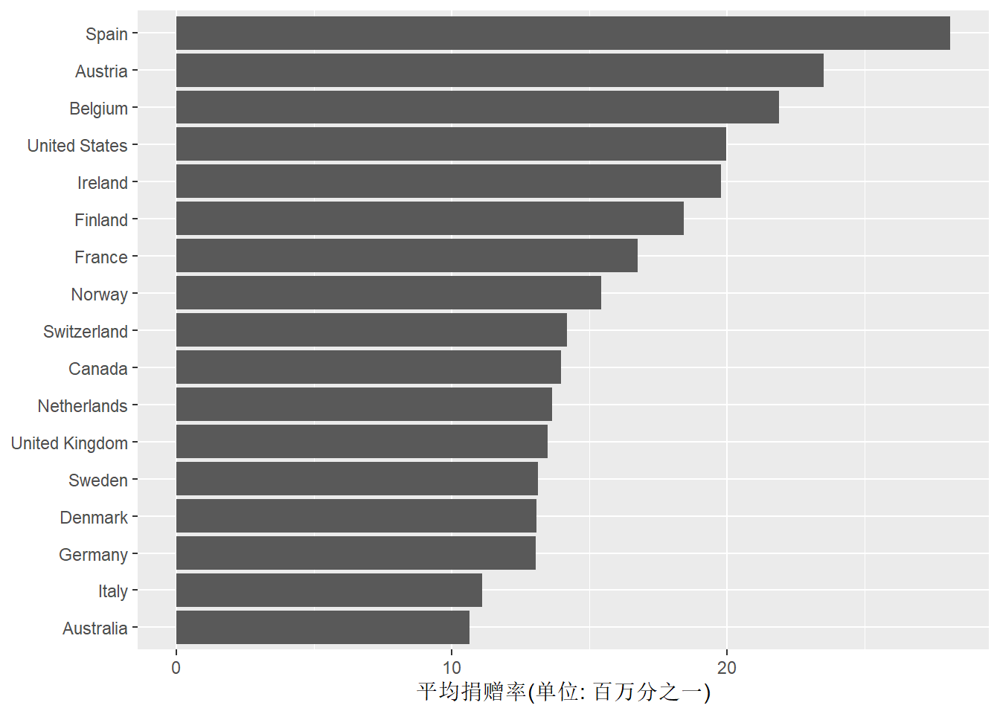

29 ggplot作图入门
29.1 介绍
Hadley Wickem的ggplot2包是R的一个作图用的扩展包，
它实现了“图形的语法”，
将一个作图任务分解为若干个子任务，
只要完成各个子任务就可以完成作图。
在作常用的图形时，
只需要两个步骤：
首先将图形所展现的数据输入到ggplot()函数中，
然后调用某个geom_xxx()函数，
指定图形类型，如散点图、曲线图、盒形图等。
如果需要进一步控制图形细节， 只要继续调用其它函数， 就可以控制变量值的表现方式(scale)、图例、配色等。 这使得我们很容易做出基本的图形， 在有需要时再深入学习， 做出更为满意的图形。
与基本R中的作图系统相比， ggplot2的作图有规律可循， 作图结果直接达到出版印刷质量， 除了可以按照一些既定模式做出常见种类的图形， 也很容易将不同图形种类组合在一起， 或者设计新颖的图形。 基本R的作图结果通常不够美观， 如果要将不同种类图形组合在一起比较困难， 对设计新的图形类型支持也不够好。
ggplot2的作图一般步骤为：
- 准备数据，一般为数据框， 且一般为长表， 即每个观测时间占一行， 每个观测变量占一列。
- 将数据输入到
ggplot()函数中， 并指定参与作图的每个变量分别映射到哪些图形特性， 比如映射为x坐标、y坐标、颜色、形状等。 这些映射称为aesthetic mappings或aesthetics。 - 选择一个合适的图形类型，
函数名以
geom_开头， 如geom_point()表示散点图。 图形类型简称为geom。 将ggplot()部分与geom_xxx()部分用加号连接。 到此已经可以作图，下面的步骤是进一步的细化设定。 - 设定适当的坐标系统，
如
coord_cartesian(),scale_x_log10()等。 仍用加号连接。 - 设定标题和图例位置等，如
labs()。 仍用加号连接。
这个流程的一个大致的模板为：
p <- ggplot(data=<输入数据框>,
mapping=aes(<维度>=<变量名>,
<维度>=<变量名>, <...>))
p + geom_<图形类型>(<...>) +
scale_<映射>_<类型>(<...>) +
coord_<类型>(<...>) +
labs(<...>)其中<...>表示额外的选项。
变量p包含做出的图形的所有数据与设定，
变量名可以任意取。
本章内容主要来自：
- Healy, Kieran (2018). Data Visualization: A Practical Introduction. Princeton University Press. https://socviz.co/index.html 这本书讲了R的ggplot的使用， 也讲了一些可视化的一般性原则。
- Claus O. Wilke(2019). Fundamentals of Data Visualization. O’Reilly Media. https://serialmentor.com/dataviz/ 这本书虽然也使用R的ggplot2包， 但正文中没有代码， 主要讲作图有哪些考虑、各种图形类型。 代码在github上可下载。
- Winston Chang(2018). R Graphics Cookbook. O’Relly Media. 网站：https://r-graphics.org/ 为第二版。 讲了各种图的R程序。
- Wickham, Hadley (2016). Ggplot2: Elegant graphics for data analysis. New York: Springer.
- RStudio的ggplot2概览： data-visualization-2.1.pdf
- ggplot2的扩展汇集：http://www.ggplot2-exts.org/gallery/
Wickham的书主要需要安装tidyverse扩展包， 安装时会自动安装其它一些有关扩展包。 Healy的的书需要通过如下程序安装socviz软件包：
后续的例子中用到一些数据集:
- 来自gapminder扩展包的gapminder数据集， 有若干个国家不同年份的一些数据， 包括所属洲、期望寿命、人口数、人均GDP。 有1704个观测和6个变量。
- socviz包的
gss_sm数据集，是2016年美国一般社会调查数据的部分内容。 有2867个观测，32个变量。 社会调查数据的变量主要取属性值， 比如无序分类、有序分类、分组的数值、整数值等。 - socviz包的organdata数据集， 是17个OECD国家历年的器官捐献情况以及一些其它记录。
- socviz扩展包的
elections_historic数据集。 包括美国历次总统大选当选人、所属党派、支持比例等。 - socviz扩展包的asasec数据集。 这是美国社会学学会(ASA)的各分会2005年到2015年的一些数据。
- ggplot2包中的
midwest数据集包含了美国中西部的一些县的统计数据， 如面积等。 - 来自ggplot2包的钻石数据集。
gapminder的头部：
## # A tibble: 20 x 6
## country continent year lifeExp pop gdpPercap
## <fct> <fct> <int> <dbl> <int> <dbl>
## 1 Afghanistan Asia 1952 28.8 8425333 779.
## 2 Afghanistan Asia 1957 30.3 9240934 821.
## 3 Afghanistan Asia 1962 32.0 10267083 853.
## 4 Afghanistan Asia 1967 34.0 11537966 836.
## 5 Afghanistan Asia 1972 36.1 13079460 740.
## 6 Afghanistan Asia 1977 38.4 14880372 786.
## 7 Afghanistan Asia 1982 39.9 12881816 978.
## 8 Afghanistan Asia 1987 40.8 13867957 852.
## 9 Afghanistan Asia 1992 41.7 16317921 649.
## 10 Afghanistan Asia 1997 41.8 22227415 635.
## 11 Afghanistan Asia 2002 42.1 25268405 727.
## 12 Afghanistan Asia 2007 43.8 31889923 975.
## 13 Albania Europe 1952 55.2 1282697 1601.
## 14 Albania Europe 1957 59.3 1476505 1942.
## 15 Albania Europe 1962 64.8 1728137 2313.
## 16 Albania Europe 1967 66.2 1984060 2760.
## 17 Albania Europe 1972 67.7 2263554 3313.
## 18 Albania Europe 1977 68.9 2509048 3533.
## 19 Albania Europe 1982 70.4 2780097 3631.
## 20 Albania Europe 1987 72 3075321 3739.gss_sm的头部：
## # A tibble: 20 x 32
## year id ballot age childs sibs degree race sex region income16
## <dbl> <dbl> <dbl> <dbl> <dbl> <dbl> <fct> <fct> <fct> <fct> <fct>
## 1 2016 1 1 47 3 2 Bache~ White Male New E~ $170000~
## 2 2016 2 2 61 0 3 High ~ White Male New E~ $50000 ~
## 3 2016 3 3 72 2 3 Bache~ White Male New E~ $75000 ~
## 4 2016 4 1 43 4 3 High ~ White Fema~ New E~ $170000~
## 5 2016 5 3 55 2 2 Gradu~ White Fema~ New E~ $170000~
## 6 2016 6 2 53 2 2 Junio~ White Fema~ New E~ $60000 ~
## 7 2016 7 1 50 2 2 High ~ White Male New E~ $170000~
## 8 2016 8 3 23 3 6 High ~ Other Fema~ Middl~ $30000 ~
## 9 2016 9 1 45 3 5 High ~ Black Male Middl~ $60000 ~
## 10 2016 10 3 71 4 1 Junio~ White Male Middl~ $60000 ~
## 11 2016 11 2 33 5 4 High ~ Black Fema~ Middl~ under $~
## 12 2016 12 1 86 4 4 High ~ White Fema~ Middl~ under $~
## 13 2016 13 2 32 3 3 High ~ Black Male Middl~ $8 000 ~
## 14 2016 14 3 60 5 6 High ~ Black Fema~ Middl~ $12500 ~
## 15 2016 15 2 76 7 0 Lt Hi~ White Male New E~ $40000 ~
## 16 2016 16 3 33 2 1 High ~ White Fema~ New E~ $50000 ~
## 17 2016 17 3 56 6 3 High ~ White Male New E~ $50000 ~
## 18 2016 18 2 62 5 8 Lt Hi~ Other Fema~ New E~ $5 000 ~
## 19 2016 19 2 31 0 2 Gradu~ Black Male New E~ $35000 ~
## 20 2016 20 1 43 2 0 High ~ Black Male New E~ $25000 ~
## # ... with 21 more variables: relig <fct>, marital <fct>, padeg <fct>,
## # madeg <fct>, partyid <fct>, polviews <fct>, happy <fct>, partners <fct>,
## # grass <fct>, zodiac <fct>, pres12 <dbl>, wtssall <dbl>, income_rc <fct>,
## # agegrp <fct>, ageq <fct>, siblings <fct>, kids <fct>, religion <fct>,
## # bigregion <fct>, partners_rc <fct>, obama <dbl>29.2 作图的一般原则
关于什么是好的图形和坏的图形， William S. Cleveland， Edward R. Tufte等人有很多的研究。
坏的图形可能有如下缺点：
- 坏的品味。统计图形应该用尽可能少的图形元素表示尽可能多的数据， 从打印图形而言，即数据量与所用墨水比例越大越好。 没有必要的颜色、三维形态经常会影响读者对图形的认读。 这是Edward R. Tufte的观点， 但是过于极端也不好。
- 坏的数据。 即使图形本身的做法没有问题， 选择了错误的或者不合适的数据也会误导读者， 甚至于用错误数据做的很专业的图形会比粗陋的图形更能误导读者。
- 坏的感知。 不好的颜色选择、三维形状、坐标轴范围、宽高比都有可能对读者的认知有影响。
作图时应考虑的一些因素：
数值型变量的不同值可以表示为：
- 同一坐标轴上的不同位置、
- 不同轴上的位置、
- 不同长度、
- 不同角度或者斜率、
- 不同面积、
- 三维空间中的不同位置、
- 颜色的不同明暗度、
- 不同颜色饱和度、
- 曲线的不同曲率、
- 三维体积，
这些表示的选择项越往后越难以被读者正确辨识。 使用颜色时，应该使用渐变的明暗度或者渐变色。
分类变量的不同值可以表示为：
- 不同分组、
- 不同颜色、
- 三维动态、
- 不同符号。
这些表示的选择项越往后越难辨识。 使用颜色时，应该使用明显不同的颜色而不应该使用渐变色。
对于最少是零的变量， 是否应该以零作为坐标轴的最低值需要考虑， 但没有一定的规则。 同一组数据在不同的坐标范围或者长宽比下曲线的斜率会有很大差别。
29.3 散点图：ggplot入门
29.3.1 基本的散点图
以gapminder数据集作为输入数据， 做出简单的散点图， 并逐步进行改善。 这个数据集有多个国家在多个年份的期望寿命与人均GDP值， 作期望寿命对人均GDP的散点图， 每个国家的每个年份作为一个点。 散点图最重要的映射是x轴与y轴两个维度。
首先调用ggplot()函数，
指定数据集，
将人均GDP映射到x轴，
将期望寿命映射到y轴，
结果保存为一个R变量：
x、y轴是最常见的映射， 也可以将变量映射为颜色、符号、线型等， 这时不需要指定具体的颜色、符号、线型， 而是将变量映射为这些图形元素类型。
ggplot()的调用中，
可以省略data =, mapping =, x =, y =，
写成：
在如上指定了数据和映射后，
只要用geom_xxx()指定一个图形类型，
并与ggplot()的结果用加号连接就可以作图了，如：

实际上，上面的程序等同于调用print(p + geom_point())。
在R函数中或者在循环中需要显式地调用print()，
否则不会显示结果。
当载入了tidyverse系统时可以写成
(p + geom_point()) %>% print()。
29.3.2 逐步改善
指定数据集、指定映射、选择适当的图形类型就可以做出基本的图形， 随后可以逐步对坐标系、坐标系刻度、标签与图例、配色等进行改善。 实际上，ggplot2包已经提供了十分合理的预设值， 用户只要进行一些必要的改动即可。
作图步骤之间用加号连接，这是ggplot包特有的语法。 例如， 用相同的映射做出拟合曲线图：
## `geom_smooth()` using method = 'gam' and formula 'y ~ s(x, bs = "cs")'用相同的映射做出散点图并叠加拟合曲线图：
## `geom_smooth()` using method = 'gam' and formula 'y ~ s(x, bs = "cs")'
geom_smooth()的默认设置调用了gam()函数来拟合曲线，
可以用geom_smooth()的参数选择不同的拟合方法，
如直线拟合：
## `geom_smooth()` using formula 'y ~ x'
注意geom_xxx()函数计算所需的变量值是从ggplot()函数保存在变量p中的信息提取的。
在以上的所有图形中，
x轴变量（人均GDP）分布非正态，严重右偏，
使得大多数散点重叠地分布在直角坐标系的左下角。
将x轴用对数刻度可以改善，
函数为scale_x_log10():
## `geom_smooth()` using formula 'y ~ s(x, bs = "cs")'广义可加模型拟合的曲线基本是一条直线。
注意，
对数刻度实际上是对原始数据进行对数变换，
而geom_smooth()的拟合计算是在对数变换之后进行的。
刚刚的图形的横坐标轴刻度不太友好，
可以调用scales扩展包的适当函数进行改善，
作为scale_x_log10()的labels选项：
## `geom_smooth()` using formula 'y ~ s(x, bs = "cs")'
scale_xxx()的labels选项指定如何标出坐标刻度数字，
参数值是一个函数对象，
如果scales包中找不到适当的功能，
可以自定义一个函数将数值转换为字符串。
scales包提供了comma, date, dollar, math,
number, ordinal, pvalue, scientific,
time等坐标刻度值转换函数。
29.3.3 颜色、符号、线型等映射
在ggplot()函数的mapping参数的aes()设定中将变量映射到x、y轴，
颜色、符号、线型等图形元素类型，
也可以作为图形设置将某些图形元素设置为固定值。
例如，
用不同颜色表示不同大洲，
就是将continent变量映射到color:
程序中仅指定了将大洲映射到颜色维， 并不具体指定所用的颜色。
作带有局部多项式曲线拟合的散点图：
## `geom_smooth()` using formula 'y ~ x'可以看出， 不同散点用了不同颜色表示其continent变量的值， 五个大洲分别进行了曲线拟合， 曲线使用了不同颜色但置信域颜色相同， 使得难以认读。 在图形右侧自动生成了颜色与continent变量值的对应关系图例。
下面的图形仍分不同大洲作曲线拟合，
并将置信区间阴影的颜色也用不同大洲区分，
方法是在aes()中将color和fill都指定为变量continent:
p <- ggplot(data=gapminder,
mapping = aes(
x = gdpPercap,
y = lifeExp,
color = continent,
fill = continent))
p + geom_point() +
geom_smooth(method="loess") +
scale_x_log10(labels=scales::dollar)## `geom_smooth()` using formula 'y ~ x'尝试将颜色指定为一个固定值，如：
p <- ggplot(data=gapminder,
mapping = aes(
x = gdpPercap,
y = lifeExp,
color = "chartreuse4"))
p + geom_point() +
geom_smooth(method="loess") +
scale_x_log10(labels=scales::dollar)## `geom_smooth()` using formula 'y ~ x'我们发现，
散点并没有使用草绿色，
而且图形右侧有一个chartreuse4图例。
这是因为，
aes()仅用来指定变量与图形元素类型的映射，
所以实际上是生成了一个仅有一个常数值"chartreuse4"的新变量，
用颜色表示这个新变量。
为了指定固定颜色，
应将color=作为geom_xxx()函数的选项，
而不是放在aes()映射中，
如：
p <- ggplot(data=gapminder,
mapping = aes(
x = gdpPercap,
y = lifeExp))
p + geom_point(color="chartreuse4") +
geom_smooth(method="loess") +
scale_x_log10(labels=scales::dollar)## `geom_smooth()` using formula 'y ~ x'geom_xxx()函数接受许多关于颜色、透明度、符号、线型的设置参数。
比如，
下面的程序指定了散点的透明度，
以及拟合直线的粗细：
p + geom_point(alpha=0.5) +
geom_smooth(method="lm", color="cadetblue1", se = FALSE, size = 4, alpha = 0.3) +
scale_x_log10(labels=scales::dollar)## `geom_smooth()` using formula 'y ~ x'程序中size指定了线的以毫米为单位的粗细，
se = FALSE关闭了置信区间显示。
用alpha =设置了透明度，
取0和1之间的值，
数值越小越透明。
在有许多个点时适当设置透明度可以比较好地显示出重叠的点，
重叠点越多点的颜色越深。
虽然这里设置了固定的透明度，
也可以在aes()中将透明度alpha映射到某个变量，
使得该变量值大小用点的透明度表示。
画线时可以用linetype参数指定线型，
0表示实线，
1到6分别表示不同的虚线线型。
下面用labs()函数给图形加上适当的标题：
p <- ggplot(data=gapminder,
mapping = aes(
x = gdpPercap,
y = lifeExp))
p + geom_point(alpha = 0.3) +
geom_smooth(method="gam") +
scale_x_log10(labels=scales::dollar) +
labs(
x = "人均GDP",
y = "期望寿命（年数）",
title = "经济增长与期望寿命",
subtitle = "数据点为每个国家每年",
caption = "数据来源: gapminder" )## `geom_smooth()` using formula 'y ~ s(x, bs = "cs")'可以看出，
labs()规定了上方的标题、小标题，
x轴、y轴的标题，
右下方的标注(caption)。
坐标轴刻度数值的规定则需要在scale_xxx()函数中给出。
29.3.4 在geom函数中映射变量
在前面的一个例图中，
在ggplot()函数中将color和fill映射到了continent变量，
使得不仅散点颜色代表了不同大洲，
还使得每个大洲单独拟合了曲线。
如果希望所有大洲拟合同一条曲线怎么办？
在必要时，
可以在geom_xxx()函数中用mapping = aes(<...>)单独指定变量映射。
例如，
下面的程序在geom_point()中将不同大洲映射为不同颜色，
而不影响geom_smooth()中的颜色以及分组：
p <- ggplot(data=gapminder,
mapping = aes(
x = gdpPercap,
y = lifeExp))
p + geom_point(mapping = aes(color = continent)) +
geom_smooth(method="loess") +
scale_x_log10(labels=scales::dollar)## `geom_smooth()` using formula 'y ~ x'
也可以将一个分类变量映射到不同绘图符号。 例如，取gapminder 2007年数据子集， 将大洲映射到符号(shape)：
p <- ggplot(data = filter(gapminder, year == 2007),
mapping = aes(
x = gdpPercap,
y = lifeExp,
shape = continent))
p + geom_point(alpha = 0.4, size = 4) +
scale_x_log10(labels=scales::dollar)这种映射仅适用于点数比较少的情况，
还用了size参数指定符号的大小（单位：毫米）。
如果所有点使用同一符号并需要指定符号，
可以在geom_point()中用shape参数指定，
可以用0到25的整数值表示，
比如19为实心点，
也可以用字符串符号名称表示，
如"circle"表示实心点。
参见ggplot2帮助目录中的vignette ggplot2: ggplot2-specs。
注意，
绘图时参与映射的分类变量会自动产生分类效果，
color映射与fill映射到分类变量时常常会起到与添加group维相同的作用，
但为了逻辑清晰起见，
需要分组时还应该显式地映射group维。
29.3.5 连续变量的颜色映射
也可以将连续变量映射为渐变色。 除了表示二元函数的等值线图以外这种方法并不利于读者认读。
例如， 将人口数取自然对数映射为渐变色：
p <- ggplot(data=gapminder,
mapping = aes(
x = gdpPercap,
y = lifeExp,
color = log(pop)))
p + geom_point() +
geom_smooth(method="loess") +
scale_x_log10(labels=scales::dollar)## `geom_smooth()` using formula 'y ~ x'这里不同散点的颜色是连续变化的， 右侧的图例仅显示了有限的一些代表值。
29.3.6 保存图像
如果使用Rmarkdown制作图文， 图像会自动进入编译的结果（如PDF、Word、HTML）中， 图像大小、输出大小可以用Rmarkdown的设置调整。
为了将最近生成的图形保存为PNG格式，用命令如
保存为PDF格式：
可以将制作的图形保存到了一个R变量中，
在ggsave()中可以用plot=参数指定，如
在ggsave()中可以用scale =指定放大比例，
用height =指定高度，
用width =指定宽度，用units =指定高度和宽度的单位，如：
单位可以是in, cm, mm。
29.4 折线图、分组、小图
29.4.1 图形中的分组和折线图
考虑gapminder数据集中每个国家的期望寿命随时间（年）的变化。
用geom_line()可以画折线图。
因为有许多国家，所以仅指定x、y变量无法得到所需图形，如：

没有得出我们希望的每个国家一条曲线的效果。 这是因为程序中没有指定需要按照国家分组， 使得同一年的不同国家的坐标连成了一条竖线。
要注意的是，
geom_line()会自动将x坐标从小到大排序，
然后再连接相邻的点。
如果希望按输入数据的次序连接相邻的点，
需要用geom_path()函数。
为了解决上图的问题，
加入按照国家分组的设定。
实际上，
分组(group)与x、y、color、fill一样可以映射到一个变量，
但仅能映射到分类变量。
上述程序的改进如下：
p <- ggplot(data = gapminder,
mapping = aes(
x = year,
y = lifeExp,
group = country))
p + geom_line()结果图形中每一条曲线对应一个国家。 为了查探其中最下方的不稳定曲线是哪一个国家，使用筛选观测的功能：
## # A tibble: 1 x 6
## country continent year lifeExp pop gdpPercap
## <fct> <fct> <int> <dbl> <int> <dbl>
## 1 Rwanda Africa 1992 23.6 7290203 737.该国家为Rwanda。
如果需要按照两个或多个分类变量交叉分组，
可以给group维指定interaction(...)，
其中...是分类变量表。
geom_line()用来绘制从左向右连接的折线。
比如，
仅绘制Rwanda的期望寿命时间序列：
p <- ggplot(data = filter(gapminder, country == "Rwanda"),
mapping = aes(
x = year,
y = lifeExp))
p + geom_line()
如果需要每个点画出散点符号，
可以同时使用geom_point()，如：
用geom_area()作类似图形，
但在折线下方填充颜色：
p <- ggplot(data = filter(gapminder, country == "Rwanda"),
mapping = aes(
x = year,
y = lifeExp))
p + geom_area(fill = "darkseagreen1", alpha = 0.5)这种图形的纵坐标应该从0开始， 使得阴影部分的大小与纵坐标值成比例， 这也是ggplot2的默认做法。
连线图还有一个问题， 就是如果x坐标不是数值型变量而是因子或者字符型， 则两点之间不会相连。 比如，将gapminder的Rwanda子集中的year转换成因子，再画折线图：
d <- gapminder %>%
filter(country == "Rwanda") %>%
mutate(year = factor(year, levels = seq(1952, 2007, by=5)))
p <- ggplot(data = d, mapping = aes(
x = year,
y = lifeExp))
p + geom_line()## geom_path: Each group consists of only one observation. Do you need to adjust
## the group aesthetic?没有得到应有的结果。
这是因为因子year起到了分组作用，
相当于每个年份为一组，
连线只能在组内连，
但每组仅有一个观测。
这时，
显式地指定group变量可以解决问题：
d <- gapminder %>%
filter(country == "Rwanda") %>%
mutate(year = factor(year, levels = seq(1952, 2007, by=5)))
p <- ggplot(data = d, mapping = aes(
x = year, y = lifeExp, group = country))
p + geom_line()对于折线图，
可以在geom_line()函数中用color参数指定颜色，
用linetype参数指定线型，
用size参数指定以毫米为单位的粗细。
线型包括：
- 0：不画线；
- 1：实线；
- 2：dashed；
- 3：dotted；
- 4：dotdash；
- 5：longdash；
- 6：twodash。
29.4.1.1 找出期望寿命增长不稳定的国家
我们编程找出寿命增长不稳定的国家。 这部分内容与作图关系不大，可以跳过。 对每个国家做线性回归， 以期望寿命为因变量， 以年份为自变量， 找出残差方差很大的，以及直线斜率为负的国家。
extract_lmr <- function(lmr){
summ = summary(lmr)
tibble(
sigma = summ$sigma,
rate = lmr$coefficients[2]
)
}
lmres <- gapminder %>%
select(country, year, lifeExp) %>%
group_by(country) %>%
nest(data = c(year, lifeExp)) %>%
mutate(lmr = map(data, ~ lm(lifeExp ~ year, data = .x))) %>%
mutate(info = map(lmr, extract_lmr)) %>%
select(-data, -lmr) %>%
unnest(info) %>%
arrange(desc(sigma))
summary(lmres)## country sigma rate
## Afghanistan: 1 Min. :0.2118 Min. :-0.09302
## Albania : 1 1st Qu.:0.7111 1st Qu.: 0.20832
## Algeria : 1 Median :1.2843 Median : 0.32145
## Angola : 1 Mean :1.6587 Mean : 0.32590
## Argentina : 1 3rd Qu.:1.9272 3rd Qu.: 0.44948
## Australia : 1 Max. :7.2054 Max. : 0.77218
## (Other) :136## # A tibble: 10 x 3
## # Groups: country [10]
## country sigma rate
## <fct> <dbl> <dbl>
## 1 Zimbabwe 7.21 -0.0930
## 2 Swaziland 6.64 0.0951
## 3 Rwanda 6.56 -0.0458
## 4 Botswana 6.11 0.0607
## 5 Lesotho 5.93 0.0956
## 6 Cambodia 5.63 0.396
## 7 Namibia 4.96 0.231
## 8 South Africa 4.74 0.169
## 9 Zambia 4.53 -0.0604
## 10 Kenya 4.38 0.207这些排名靠前的国家都是期望寿命增长不稳定的。
29.4.2 小图(facet)
前面所有国家的图包含了过多的曲线， 使得图形表现得很拥挤。 可以将一个作图区域拆分成若干个小块， 称为小图（facet）， 按照某一个或两个分类变量的不同值将数据分为若干个子集， 每个数据子集分别在小图上作图。
对于上面的例子，
可以将每个大洲的图形分别放置在一个小图上。
小图不是一种变量映射，
而是一种图形摆放方法，
所以不设置在aes()函数内，
而是用facet_wrap()函数规定。
这种功能与group映射的功能有些重复，
所以有时需要与group映射配合使用，
有时则不需要。
程序如：
p <- ggplot(data = gapminder,
mapping = aes(
x = year,
y = lifeExp,
group = country))
p + geom_line() + facet_wrap(~ continent)区分不同小图的标签写在每个小图的上方。
可以用facet_wrap()参数strip_position和参数switch调整标签的上下左右。
小图之间默认公用了横坐标和纵坐标且坐标范围保持一致。
如果不保持一致，
读者可能会有误解。
但是x轴或y轴映射为分类变量且不同小图的分类完全不同时，
可以令各小图中该轴的取值不统一。
facet_wrap()选项scales默认为"fixed"，
即所有小图的x轴、y轴都范围一致，
取"free_x"则允许各小图的x轴不统一，
"free_y"允许各小图的y轴不统一，
"free"允许各小图的x轴和y轴都不统一。
在facet_wrap()中可以用ncol参数指定小图的列数，
用nrow指定小图的行数。
各个小图的次序应该设定为一定的合理次序，
比如用来分类的变量本身有序，
或者令各小图中的数据值有一定的增减次序。
下面的程序将曲线颜色变浅，
对每个大洲增加了拟合曲线，
增加了适当的标题和坐标轴标签。
注意，这时不能使用统一的group = country映射，
否则拟合曲线就是对每个国家都单独有一条拟合曲线，
而不是每幅小图中仅有一条拟合曲线。
办法是仅在geom_line()中给出group = country的映射，
但在geom_smooth()中则不用group维。
程序如下：
p <- ggplot(data = gapminder,
mapping = aes(
x = year,
y = lifeExp))
p + geom_line(mapping = aes(group = country), color = "gray70") +
geom_smooth(method = "loess", color="cyan", se = FALSE, size = 1.1) +
facet_wrap(~ continent, ncol = 2) +
labs(
x = "年份",
y = "期望寿命",
title = "五个大洲各国期望寿命变化趋势"
)## `geom_smooth()` using formula 'y ~ x'注意group = country的设置从ggplot()函数中转移到了geom_line()函数中，
否则就意味着拟合线也需要按照国家分组，
而不是按大洲分组。
facet_wrap()主要适用于按照一个分类变量的值将不同观测在不同小图中表现，
可以人为指定小图的行数和列数。
如果需要按照两个分类变量交叉分组分配小图，
可以用facet_grid()函数。
例如，
对gss_sm数据集，作小孩个数对年龄的散点图：
## Warning: Removed 18 rows containing missing values (geom_point).有过多的重叠点。 将观测按照性别(sex)和种族(race)交叉分组， 分配到不同的小图上：
## Warning: Removed 18 rows containing missing values (geom_point).交叉分组时作小图时，
sex ~ race这种写法使得不同性别对应到不同行，
不同种族对应到不同列。
在图形中增加拟合曲线：
## `geom_smooth()` using method = 'gam' and formula 'y ~ s(x, bs = "cs")'## Warning: Removed 18 rows containing non-finite values (stat_smooth).## Warning: Removed 18 rows containing missing values (geom_point).这里虽然没有映射group维，
但还是按性别和种族对数据集分成了6个子集，
每个小图中仅有一个自己的数据。
29.5 数据变换与条形图
有些geom_xxx()函数直接按照数据值作图，
如geom_point()、geom_line()，
而geom_smooth()这样的函数则会按照某种算法计算并对计算结果作图。
geom_xxx()都有默认的stat_xxx()函数用来计算，
也可以人为指定不同的统计规则。
考虑条形图的例子。
ggplot2中的条形图函数geom_bar()可以对一个分类变量自动统计频数，
并作频数条形图。
比如对gss_sm数据集的bigregion变量作频数条形图：
结果是每个大区的受访者人数的条形图。
图形中x映射是用户指定的，
而y轴则是自动计算的频数。
实际上，
geom_bar()自动调用了统计函数stat_freq()对每个大区计算频数，
生成新变量count和prop。
geom_bar()默认使用count(频数)。
虽然ggplot2能够自动统计频数，
但最好还是预先统计好频数，
仅用ggplot2绘图。
所以，上例可以用tidyverse的count和ggplot2的geom_col改写成：
df1 <- gss_sm %>%
select(bigregion) %>%
count(bigregion) %>%
mutate(ratio = n / sum(n))
p <- ggplot(data = df1,
mapping = aes(x = bigregion, y = n))
p + geom_col() +
labs(y = "Count")
下面的程序将纵坐标改成了比例：
下面的例子作gss_sm数据集中religion变量的频数条形图，
并给不同的条形自动分配不同的颜色，
方法是指定fill = religion：
## Warning: Factor `religion` contains implicit NA, consider using
## `forcats::fct_explicit_na`p <- ggplot(data = df2,
mapping = aes(
x = religion,
y = n,
fill = religion))
p + geom_col() +
labs(y = "Count")因为将religion同时映射到x维与fill维，
所以对应fill维在图形右侧出现了图例，
这是多余的。
调用guides(fill = FALSE)可以人为指定不做关于填充色的图例：
从可视化理论的角度看， 上图中的不同颜色是多余的， 用同一颜色更能强度数据本身。
29.5.1 分段与并列条形图
上面的条形图展现了单个分类变量的频数分布。 两个分类变量的交叉频数分布可以用分段条形图或者并列条形图表现。
例如，对gss_sm数据集，
按照bigregion分组计算频数，
每组内再按照religion计算频数，
用tidyverse统计后作图如下：
df3 <- gss_sm %>%
select(bigregion, religion) %>%
group_by(bigregion, religion) %>%
summarise(n = n()) %>%
mutate(ratio = n / sum(n)) %>%
ungroup()## Warning: Factor `religion` contains implicit NA, consider using
## `forcats::fct_explicit_na`这样的图形可以很容易地比较大类(这里是bigregion)的频数比例， 但大类内的小类(这里是religion)可以比较容易地在大类内部比较， 但是在大类之间比较则较困难。 如果仅有两个小类， 则小类在大类之间的比较也没有问题。
另一种做法是将大类的高度拉平， 图形仅表示每一大类内部小类的比例， 没有大类频数信息， 也不能比较两个大类之间的小类频数， 但可以大致地在大类之间比较小类的比例：
上面的程序在geom_col()中用了position = "fill"选项。
并排的条形图可以表现每个交叉类的频数， 可以比较容易地比较每个大类内部的小类比例以及小类的频数， 但是不容易比较大类的比例：
将上图中的纵轴改为大类内的比例（每个大区的比例之和等于1）：
p <- ggplot(data = df3,
mapping = aes(
x = bigregion,
y = ratio,
fill = religion))
p + geom_col(position = "dodge")为了在不同大区之间比较宗教比例分布， 可以借助于小图， 将每个大区分配到一个小图：
p <- ggplot(data = df3,
mapping = aes(x = religion, y = ratio, fill=religion))
p + geom_col(position="dodge") +
labs(x=NULL, y="比例") +
coord_flip() +
facet_grid(~ bigregion) +
guides(fill=FALSE)有时用来绘图的数据已经是一个频数表， 比如泰坦尼克号乘客生存与性别的频数表：
## fate sex n percent
## 1 perished male 1364 62.0
## 2 perished female 126 5.7
## 3 survived male 367 16.7
## 4 survived female 344 15.6这是一个长表格式的列联表，
对于table()生成的列联表可以用as.data.frame将其转换为长表格式。
作fate为大组的sex的并排条形图：
p <- ggplot(data=titanic, mapping = aes(
x = fate, y = n, fill = sex))
p + geom_col(position = "dodge")也可以按照性别分成大组：
p <- ggplot(data=titanic, mapping = aes(
x = sex, y = n, fill = fate))
p + geom_col(position = "dodge")用theme()函数的legend.position参数可以指定图例的位置，如：
做成堆叠形式：
position = "stack"也是geom_col()函数的默认选项。
实际上，
还可以用适当程序将存亡状态以及频数直接标在条形的色块内，
geom_text()函数可以在指定坐标位置标注指定的文字标签，
见29.8.2。
datasets包的Titanic数据集包含了泰坦尼克号乘客更详细的信息。 我们按照存亡结果和舱位等级分小图作男女频数条形图：
titanic2 <- as.data.frame(Titanic) %>%
group_by(Class, Sex, Survived) %>%
summarise(n = sum(Freq)) %>%
filter(Class != "Crew") %>%
mutate(Survived = factor(
Survived, levels = c("Yes", "No"),
labels = c("survived", "perished")))
p <- ggplot(data = titanic2, mapping = aes(
x = Sex, y = n, fill = Sex))
p + geom_col() +
facet_grid(Class ~ Survived) +
guides(fill = FALSE)这里将fill映射到了Sex，
使得表示男女的条形填充了不同的颜色。
如果不满意上面的颜色，
可以用scale_fill_manual()函数人为地指定颜色、对应离散值和图例标签。
R扩展包colourpicker提供了很好交互图形界面用来挑选颜色。
29.5.2 条形图的其它应用
geom_col()不仅限于画频数或者比例的条形图，
此函数可以将一般用折线图表现的内容画成条形图，
但一定要注意一点：y坐标轴必须从0开始，
这也是geom_col()和geom_bar()函数默认的设置。
如果坐标轴不从零开始，
则条形的长度就不能正确表示对应的y变量数值。
举一个用条形图表示不是频数和比例的量的例子。
socviz包的oecd_sum数据集包含各年的美国以及OECD国家的期望寿命：
## # A tibble: 57 x 5
## # Groups: year [57]
## year other usa diff hi_lo
## <int> <dbl> <dbl> <dbl> <chr>
## 1 1960 68.6 69.9 1.3 Below
## 2 1961 69.2 70.4 1.2 Below
## 3 1962 68.9 70.2 1.30 Below
## 4 1963 69.1 70 0.9 Below
## 5 1964 69.5 70.3 0.800 Below
## 6 1965 69.6 70.3 0.7 Below
## 7 1966 69.9 70.3 0.400 Below
## 8 1967 70.1 70.7 0.6 Below
## 9 1968 70.1 70.4 0.3 Below
## 10 1969 70.1 70.6 0.5 Below
## # ... with 47 more rows我们用geom_col()作diff变量的条形图，
并按照hi_lo变量对正负差值分别使用不同颜色：
p <- ggplot(data = oecd_sum,
mapping = aes(
x = year,
y = diff,
fill = hi_lo))
p + geom_col() +
guides(fill = FALSE) + # 正负号的不同颜色不使用图例标注
labs(x = NULL,
y = "期望寿命差值",
title = "美国期望寿命差值",
subtitle = "1960-2015年美国与OECD国家期望寿命差值",
caption="来自socviz扩展包")## Warning: Removed 1 rows containing missing values (position_stack).
29.6 直方图与密度估计
条形图(barplot)反映分类变量的频数分布或者比例，
直方图(histogram)反映连续取值的数值变量的分布。
geom_histogram()作直方图，
可以自动选取合适的分组个数，
也可以人为指定分组个数。
ggplot2包中的midwest数据集包含了美国中西部的一些县的统计数据，
如面积（单位：平方英里）。
下面的程序对连续取值的数值型变量area作频数直方图，
自动确定分组个数：
## `stat_bin()` using `bins = 30`. Pick better value with `binwidth`.
上面图形的纵坐标是频数(count)，是每个组的频数。
geom_histogram()默认调用stat_bin()进行分组及频数统计。
直方图的形状比较依赖于分组数与分组起始点位置，
可以用bins参数控制分组数，
用binwidth参数控制分组宽度，
用center或者boundary参数控制组中心或者组边界对齐位置，
如：

可以利用fill映射将构成直方图的观测按照某个分类变量分组，
然后每个条形内部按照该分类变量的值分段染色，
段内各颜色的长度代表该条形所在组某一类的频数，
如：
midwest_sub <- midwest %>%
filter(state %in% c("OH", "WI"))
p <- ggplot(data=midwest_sub,
mapping = aes(x = area, fill = state))
p + geom_histogram(bins = 10)可见面积较小的县主要来自OH州， 面积较大的县主要来自WI州。
geom_density()可以对连续变量绘制密度估计曲线，如：

下面的程序写法制作每个州的各县的面积密度估计， 画在同一坐标系中：
p <- ggplot(data = midwest,
mapping = aes(
x = area,
color = state,
fill = state))
p + geom_density(alpha = 0.3)可以看出，IN与MI州各县的面积偏小。 WI州各县的面积较大。
上面的图形可以借助于geom_line(stat = "density")改成仅有多条曲线：
p <- ggplot(data = midwest,
mapping = aes(
x = area,
color = state))
p + geom_line(stat = "density")
geom_density()的纵轴是密度估计。
为了能够将直方图与密度估计画在同一坐标系中，
需要将直方图的纵轴也改为密度估计，如：
p <- ggplot(data = midwest,
mapping = aes(x = area))
p + geom_histogram(mapping = aes(y = ..density..), alpha = 0.6) +
geom_density(size = 1.1)## `stat_bin()` using `bins = 30`. Pick better value with `binwidth`.进一步地，
geom_freqpoly()将直方图做成折线格式；
geom_bin2d()作二维的直方图，用不同颜色代表密度；
geom_density_2d()作二维密度估计等值线图。
29.7 绘图语法介绍
29.7.1 绘图语法
ggplot2的不仅仅是能够做一些固定格式的图形， 而是按照一种图形语法构建图形。 小图功能可以将数据集分成若干子集作多幅小图， 每幅小图中， 有可以分层， 每层有不同类型的图， 各层叠加显示在一起。 所以，分层语法作图结构如下：
- 有一个主要的数据集， 以及从数据集变量到坐标位置、颜色、填充、大小、符号等的映射关系(aesthetics);
- 有一到多个图层， 比如散点图和平滑曲线图层， 每个图层有几何对象、必要的统计变换、位置调整， 还可以有额外的数据集以及额外的映射关系；
- 对每个映射关系有一个刻度(scaling)， 对x、y维，一般需要线性变换，偶尔用到对数变换之类的其它变换， 颜色、填充等维度需要一些复杂的对应关系。 无特殊需要时只要使用默认刻度；
- 有一个坐标系统， 如直角坐标系、极坐标系、球面坐标系等， 一般只要使用默认的坐标系统；
- 可以划分小图(facetting)。
利用绘图语法既可以做出常见的统计图形， 也可以做出各种新颖的图形， 当然， 就像语法正确的语句不一定有意义， 用绘图语法做得新颖图形不一定有实际意义， 还是要按照可视化的一般原则做出能说服读者的图形。
29.7.2 图形种类
geom_xxx()提供了各种基本图形。
列表如下：
- 基础图形：
geom_blank()不画图，可以按映射的变量设定坐标范围；geom_point()每个观测为一个散点；geom_hline(),geom_vline(),geom_abline()画线；geom_path()每个观测提供\((x,y)\)坐标，在相邻观测之间连线；geom_ribbon()需要x和ymin, ymax维，在从小到大排序后的相邻观测之间连接阴影区域；geom_segment()需要x, y和xend, yend，为每个观测画一条线段；geom_rect()需要xmin, xmax, ymin, ymax，为每个观测画一个长方形，可有填充色；geom_polygon()需要x, y，将相邻观测连续并连接成一个闭合的多边形，中间填充颜色；geom_text()需要x, y和lable，每个观测画一条文字标签。
- 单变量图层：
geom_bar(),geom_col()作条形图；geom_histogram()对连续变量x作直方图；geom_density()对连续变量x作一元密度估计曲线；geom_dotplot()用原点作直方图；geom_freqpoly()用折线作直方图。
- 两变量图形：
- 两个连续变量x, y：
geom_point()散点图；geom_quantile()拟合分位数回归曲线；geom_rug()在坐标轴处画数值对应的短须线；geom_smooth()画各种拟合曲线；geom_text()在指定的x, y位置画label给出的文字标签；
- 显示二元分布:
geom_bin2d()作长方形分块的二维直方图；geom_density2d()作二元密度估计等值线图；geom_hex()作正六边形分块的二维直方图。
- 两个变量中有分类变量时：
geom_count()：重叠点越多画点越大；geom_jitter(): 随机扰动散点位置避免重叠，数值变量有重叠时也可以用；
- 一个连续变量和一个分类变量：
geom_col()作条形图，对分类变量的每个值画一个条形，长度与连续变量值成比例；geom_boxplot()对每个类做一个盒形图；geom_violin()对每个类做一个小提琴图。
- 一个时间变量和一个连续变量：
geom_area()作阴影曲线图，曲线下方填充阴影色；geom_line()作折线图，在相邻两个时间之间连接线段；geom_step()作阶梯函数图，在相邻两个时间之间连接阶梯函数线。
- 不确定性：
geom_crossbar()对每个观测输入的x, y, ymin, ymax画中间有线的纵向条形；geom_errbar()对每个观测输入的x, ymin, ymax画纵向误差条；geom_linerange()对每个观测输入的x, ymin, ymax画一条竖线；geom_pointrnage()对每个观测输入的x, y, ymin, ymax画一条中间有点的竖线。
- 地图：
geom_map(): 用区域边界坐标数据画边界线地图。
- 两个连续变量x, y：
- 三个变量：
geom_contour(): 用输入的x, y, z数据画等值线图。geom_tile()用输入的x, y位置, width, height大小和指定的fill维画长方形色块填充图。geom_raster()是geom_tile()的长方形大小相同时的快速版本。
29.8 更多图形种类
29.8.1 连续变量的分组图形
选用socviz包的organdata数据集， 这是17个OECD国家历年的器官捐献情况以及一些其他变量的记录。 其中前6列的一些抽样数据：
## # A tibble: 10 x 6
## country year donors pop pop_dens gdp
## <chr> <date> <dbl> <int> <dbl> <int>
## 1 Netherlands 1992-01-01 15.1 15184 36.6 19285
## 2 Finland NA NA NA NA NA
## 3 Denmark 1999-01-01 14.3 5322 12.4 26985
## 4 Finland 1992-01-01 19.4 5042 1.49 16943
## 5 Belgium 1999-01-01 25.2 10226 30.9 24521
## 6 Belgium 1993-01-01 21 10085 30.5 19733
## 7 Belgium 1991-01-01 21 10005 30.2 18796
## 8 United States NA NA NA NA NA
## 9 Austria NA NA 7678 9.16 18914
## 10 Italy 1994-01-01 7.9 57204 19.0 19903变量donors是每百万人中器官捐献数。 作donors对year的散点图：
## Warning: Removed 34 rows containing missing values (geom_point).每年有多个数值， 是不同国家的捐献数。 这个图形不能反映一种时间趋势， 不太有用。
可以对每个国家画一条折线图：
p <- ggplot(data = organdata,
mapping = aes(
x = year,
y = donors,
color = country))
p + geom_line()## Warning: Removed 34 row(s) containing missing values (geom_path).
共有17个国家，每个国家做了器官捐赠率随时间变化的折线图。 用小图的方法将其分配到不同的小图：
p <- ggplot(data = organdata,
mapping = aes(
x = year,
y = donors))
p + geom_line() +
facet_wrap(~ country, ncol=4)## Warning: Removed 2 row(s) containing missing values (geom_path).用geom_boxplot()可以做盒形图，
能够画出连续型变量的主要分位数，表现变量分布，如：
## Warning: Removed 34 rows containing non-finite values (stat_boxplot).这是所有国家所有年的捐献率分布情况。
类似函数还有geom_violin()。
每个国家的捐献率单独做盒形图并且放在同一坐标系中：
p <- ggplot(data = organdata,
mapping = aes(y = donors, x = country))
p + geom_boxplot() + coord_flip()## Warning: Removed 34 rows containing non-finite values (stat_boxplot).这个图形很好地比较了不同国家的历年捐献率的分布，
比如，
Spain的捐献率最高。
为了将图形中的各个国家按照捐献率的某个统计量排序，
可以使用stats包的reorder()函数，
调整因子的水平次序。
为了能够比较容易地标出国家名称，
交换x轴与y轴的作用，
如：
p <- ggplot(data = organdata,
mapping = aes(
y = donors,
x = reorder(country, donors, median, na.rm=TRUE)))
p + geom_boxplot() +
coord_flip() +
labs(y = "捐献率(单位: 百万分之一)",
x = NULL)## Warning: Removed 34 rows containing non-finite values (stat_boxplot).这里盒形图是横向的， 如果仍然纵向作图， 国家名称在横轴， 许多个国家名称就会重叠在一起， 只好仅显示其中一部分名称。
当每组（这里是每个国家）的观测个数很少时， 也可以做成散点图，如：
p <- ggplot(data = organdata,
mapping = aes(
y = donors,
x = reorder(country, donors, median, na.rm=TRUE)))
p + geom_point(alpha = 0.4) +
coord_flip() +
labs(y = "捐献率(单位: 百万分之一)",
x = NULL)## Warning: Removed 34 rows containing missing values (geom_point).因为有的观测点完全重叠，
所以用了alpha参数指定一定的透明度，
重叠越多的点显示的颜色越深。
但是，
如果两个不同颜色的点完全重叠，
半透明不能显示两个不同颜色的效果。
在作这样的散点图时，
为了避免重叠的点，
可以将geom_point()改为geom_jitter()，如:
## Warning: Removed 34 rows containing missing values (geom_point).上图的点的扰动过大了，
使得不同国家的区分不明显了。
作扰动的散点图时，
可以用width指定左右扰动范围，
用height指定上下扰动范围，
这里只需要指定左右扰动范围，
因为坐标轴对调所以就变成了上下扰动：
p + geom_jitter(alpha = 0.4, width = 0.2, height = 0) +
coord_flip() +
labs(y = "捐献率(单位: 百万分之一)",
x = NULL)## Warning: Removed 34 rows containing missing values (geom_point).geom_boxplot()也支持color, fill维度。
organdata中的变量world是一个国家的福利类型，
用不同填充色表示world变量：
p <- ggplot(data = organdata,
mapping = aes(
y = donors,
x = reorder(country, donors, median, na.rm=TRUE),
fill = world))
p + geom_boxplot() +
coord_flip() +
labs(y = "捐献率(单位: 百万分之一)",
x = NULL,
fill = "福利类型") +
theme(legend.position = "top")## Warning: Removed 34 rows containing non-finite values (stat_boxplot).下面做不同国家的平均捐赠率的图形。 首先得到统计数据：
organdata2 <- organdata %>%
group_by(country) %>%
summarize(
donors_n = sum(!is.na(donors)),
donors_mean = mean(donors, na.rm=TRUE),
donors_sd = sd(donors, na.rm=TRUE),
donors_se = donors_sd / sqrt(donors_n))
organdata2## # A tibble: 17 x 5
## country donors_n donors_mean donors_sd donors_se
## <chr> <int> <dbl> <dbl> <dbl>
## 1 Australia 12 10.6 1.14 0.330
## 2 Austria 12 23.5 2.42 0.697
## 3 Belgium 12 21.9 1.94 0.559
## 4 Canada 12 14.0 0.751 0.217
## 5 Denmark 12 13.1 1.47 0.424
## 6 Finland 12 18.4 1.53 0.441
## 7 France 12 16.8 1.60 0.461
## 8 Germany 12 13.0 0.611 0.176
## 9 Ireland 12 19.8 2.48 0.715
## 10 Italy 12 11.1 4.28 1.23
## 11 Netherlands 12 13.7 1.55 0.448
## 12 Norway 12 15.4 1.11 0.320
## 13 Spain 12 28.1 4.96 1.43
## 14 Sweden 12 13.1 1.75 0.506
## 15 Switzerland 12 14.2 1.71 0.493
## 16 United Kingdom 12 13.5 0.775 0.224
## 17 United States 12 20.0 1.33 0.383用条形图表现不同国家的平均捐献率：
p <- ggplot(data = organdata2,
mapping = aes(
x = reorder(country, donors_mean),
y = donors_mean))
p + geom_col() +
coord_flip() +
labs(x = NULL, y = "平均捐赠率(单位: 百万分之一)")
这样的图形也可以做成点图， 称为Cleveland点图。 不需要再颠倒横纵坐标， 直接规定x轴为平均捐赠率即可：
p <- ggplot(data = organdata2,
mapping = aes(
y = reorder(country, donors_mean),
x = donors_mean))
p + geom_point() +
labs(y = NULL, x = "平均捐赠率(单位: 百万分之一)")organdata数据集中变量consent_law是关于一个国家中器官捐赠是必须告知还是默认捐赠的区别。
为了在上面的点图中用不同颜色区分这两种做法，
需要在分组汇总阶段就将consent_law也作为分组变量。
这是因为summarize()函数会自动舍弃分组变量和统计结果之外的原有变量。
organdata3 <- organdata %>%
group_by(consent_law, country) %>%
summarize(
donors_n = sum(!is.na(donors)),
donors_mean = mean(donors, na.rm=TRUE),
donors_sd = sd(donors, na.rm=TRUE),
donors_se = donors_sd / sqrt(donors_n)) %>%
ungroup()
organdata3## # A tibble: 17 x 6
## consent_law country donors_n donors_mean donors_sd donors_se
## <chr> <chr> <int> <dbl> <dbl> <dbl>
## 1 Informed Australia 12 10.6 1.14 0.330
## 2 Informed Canada 12 14.0 0.751 0.217
## 3 Informed Denmark 12 13.1 1.47 0.424
## 4 Informed Germany 12 13.0 0.611 0.176
## 5 Informed Ireland 12 19.8 2.48 0.715
## 6 Informed Netherlands 12 13.7 1.55 0.448
## 7 Informed United Kingdom 12 13.5 0.775 0.224
## 8 Informed United States 12 20.0 1.33 0.383
## 9 Presumed Austria 12 23.5 2.42 0.697
## 10 Presumed Belgium 12 21.9 1.94 0.559
## 11 Presumed Finland 12 18.4 1.53 0.441
## 12 Presumed France 12 16.8 1.60 0.461
## 13 Presumed Italy 12 11.1 4.28 1.23
## 14 Presumed Norway 12 15.4 1.11 0.320
## 15 Presumed Spain 12 28.1 4.96 1.43
## 16 Presumed Sweden 12 13.1 1.75 0.506
## 17 Presumed Switzerland 12 14.2 1.71 0.493p <- ggplot(data = organdata3,
mapping = aes(
y = reorder(country, donors_mean),
x = donors_mean,
color = consent_law))
p + geom_point(size = 3) +
labs(y = NULL, x = "平均捐赠率(单位: 百万分之一)") +
theme(legend.position = "top")平均捐赠率最高的三个国家都是不需告知预先假定同意的。
也可以将两种告知规定分成两个小图：
p <- ggplot(data = organdata3,
mapping = aes(
y = reorder(country, donors_mean),
x = donors_mean))
p + geom_point(size = 3) +
facet_wrap(~ consent_law, ncol=1, scales = "free_y") +
labs(y = NULL, x = "平均捐赠率(单位: 百万分之一)")因为纵轴是分类变量，程序中的scales = "free_y"使得纵轴仅对存在的类留出空间。
用了ncol = 1使得两种告知规定的小图上下排列，
便于比较横坐标值。
当每个类别仅有一个数值时， 一般推荐使用Cleveland点图， 而不是条形图或者折线图。 Cleveland点图总是将类别值绘制在y轴， 将要比较的数量值用x坐标表示， 并将各类按照数量值大小次序排列。
可以表示平均值的点图上增加一条线，
表示误差大小，所用函数为geom_pointrange()。
这个函数仅支持对y轴加误差线，
所以需要用交换坐标轴的办法将分类变量放在y轴。
比如，
画出近似95%置信区间范围：
p <- ggplot(data = organdata3,
mapping = aes(
x = reorder(country, donors_mean),
y = donors_mean))
p + geom_pointrange(
mapping = aes(ymin = donors_mean - 1.96*donors_se,
ymax = donors_mean + 1.96*donors_se)) +
coord_flip() +
facet_wrap(~ consent_law, ncol=1, scales = "free_y") +
labs(x = NULL, y = "平均捐赠率(单位: 百万分之一)及95%置信区间")
类似的函数还有geom_linerange()、geom_crossbar()、geom_errorbar()。
29.8.2 坐标系中的文字
类似于散点图，
可以将指定的文字绘制在指定的坐标位置，
使用geom_text(mapping = aes(label = 字符型变量))。
例如，gapminder数据集中各大洲的平均寿命与平均gdp的文字散点图：
gapminder2 <- gapminder %>%
group_by(continent) %>%
summarize(lifeExp = mean(lifeExp, na.rm=TRUE),
gdpPercap = mean(gdpPercap))
p <- ggplot(data=gapminder2,
mapping = aes(
x = gdpPercap,
y = lifeExp,
label = continent))
p + geom_text()可以同时绘制散点：
ggrepel扩展包提供了增强的图形文本功能。
geom_text_repel()提供了与geom_text()类似的功能。
考虑socviz扩展包的elections_historic数据集，
这是美国历次总统选举情况数据。
部分数据显示：
## # A tibble: 10 x 6
## year winner win_party ec_pct popular_pct popular_margin
## <int> <chr> <chr> <dbl> <dbl> <dbl>
## 1 1824 John Quincy Adams D.-R. 0.322 0.309 -0.104
## 2 1828 Andrew Jackson Dem. 0.682 0.559 0.122
## 3 1832 Andrew Jackson Dem. 0.766 0.547 0.178
## 4 1836 Martin Van Buren Dem. 0.578 0.508 0.142
## 5 1840 William Henry Harrison Whig 0.796 0.529 0.0605
## 6 1844 James Polk Dem. 0.618 0.495 0.0145
## 7 1848 Zachary Taylor Whig 0.562 0.473 0.0479
## 8 1852 Franklin Pierce Dem. 0.858 0.508 0.0695
## 9 1856 James Buchanan Dem. 0.588 0.453 0.122
## 10 1860 Abraham Lincoln Rep. 0.594 0.396 0.101取popular_pct(popular投票支持率)为横坐标，
取ec_pct(election college投票支持率)为纵坐标，
将历次结果标在坐标系中：
p <- ggplot(data = elections_historic,
mapping = aes(
x = popular_pct,
y = ec_pct,
label = winner_label))
p + geom_text()因为点比较多，文字也比较长，有很多重叠。
ggrepel包的geom_text_repel()则很好地处理了这个问题：
## Warning: 程辑包'ggrepel'是用R版本3.6.3 来建造的可以看出，其解决重叠问题的方式是用短线指向实际的坐标位置。
在Rmd文件中，
还是有少量的重叠，
可以通过在R代码段选项中增大fig.width和fig.height参数实现，
下面的代码段用了选项fig.width=20, fig.height=16：
可以用scale_x_continuous()和scale_y_continuous()将坐标轴的比例值转换成百分数，
用geom_hline(yintercept)添加横线，
用geom_vline(xintercept)添加竖线，
适当地用标注改善图形：
p + geom_hline(yintercept = 0.5, size = 1.4, col = "gray80") +
geom_vline(xintercept = 0.5, size = 1.4, col = "gray80") +
geom_point() +
geom_text_repel() +
scale_x_continuous(labels = scales::percent) +
scale_y_continuous(labels = scales::percent) +
labs(
x = "Winner's share of Popular Vote",
y = "Winner's share of Electoral College Votes",
title = "Presidential Elections: Popular & Electoral College Margins",
subtitle = "1824-2016",
caption = "Data for 2016 are provisional."
)为了画斜线，可以用geom_abline()函数。
29.8.3 文字选项
用geom_text()添加文字时，
可以使用一些图形选项。
可以用size选项（不是aes映射）指定字符大小，
单位为毫米。如：
d <- tibble(
x = 1:2,
y = c(1,1),
label = c("较小", "较大"))
p <- ggplot()
p + geom_text(data = d[1,], mapping = aes(
x = x, y = y, label = label), size = 4) +
geom_text(data = d[2,], mapping = aes(
x = x, y = y, label = label), size = 8)文字的大小是按毫米计算的， 不是按照坐标系中单位计算的， 而且放大或者缩小坐标系时文字大小不变。 程序不自动判断文字是否超出坐标系边界， 所以有时需要人为将坐标范围适当放大。
可以用family选项选择不同的字体种类，
在所有操作系统与绘图输出中都可选的种类包括"sans"(这是缺省值，等线字体)、"serif"(有笔画粗细的字体)、"mono"(类似于打字机字体)。family可以作为选项，也可以作为映射，如：
d <- tibble(
x = 1,
y = 3:1,
label = c("sans默认字体", "serif等线字体", "mono字体"),
family = c("sans", "serif", "mono"))
p <- ggplot()
p + geom_text(data = d, mapping = aes(
x = x, y = y, label = label, family = family), size = 5)
要使用其它字体则比较复杂， 可参考扩展包showtext和extrafonts。
在R Markdown文件中作图使用中文字体要更麻烦一些， 很容易变成乱码，需要在文件开始设置：
其中height和width选项可以修改为其它高度、宽度值。
如果还是有乱码，
可以在作图的代码段中指定选项dev="png"，
使用栅格图而不是PDF默认的矢量图作为输出。
可以用fontface映射或选项指定"plain"(缺省值)、"bold"(粗体)、"italic"(斜体)。
可以用hjust映射或选项指定文字的横向对齐方式，
包括"left"、"center"、"right"、"inward"、"outward"。
可以用vjust映射或选项指定文字的纵向对齐方式，
可取"bottom"、"middle"、"top"、"inward"、"outward"。
默认为居中对齐。
"inward"可以使文字向中心移动，
避免边界的文字出界。
可以用angle映射或选项指定文字的旋转方向。
可以用nudge_x和nudge_y选项指定对每条标签文字的横向和纵向微调，
单位是坐标系中的单位。
可以用选项check_overlap = TRUE要求重叠的文字不全显示出来，
使得结果不重叠。
geom_text()函数的一个变种是geom_label()，
标签文字会有一个圆角的背景框，
可以指定填充颜色。
29.8.4 标出特殊点
在坐标系中标注文字的功能更经常用来标出图形中的特殊点。
考虑organdata中各国的平均捐赠率数据。 作平均捐赠率对平均gdp的散点图：
organdata4 <- organdata %>%
group_by(country) %>%
summarize(
donors_mean = mean(donors, na.rm=TRUE),
gdp_mean = mean(gdp, na.rm=TRUE)
)
p <- ggplot(data = organdata4,
mapping = aes(x = gdp_mean, y = donors_mean))
p + geom_point() +
labs(x = "平均GDP",
y = "平均器官捐赠率(单位：百万分之一)")如果需要标出其中的特殊点，
就要生成一个数据子集，
并在geom_text()中指定输入数据为此子集：
p + geom_point() +
geom_text(data = subset(organdata4, gdp_mean > 27500 | donors_mean > 25),
mapping = aes(label = country)) +
labs(x = "平均GDP",
y = "平均器官捐赠率(单位：百万分之一)")上面标的文字有超出边界的问题，
可以在geom_text()中加选项hjust = "inward":
29.9 刻度(scale)
在ggplot()的mapping参数中指定x维、y维、color维等，
实际上每一维度都有一个对应的默认刻度(scale)，
即将数据值映射到图形中的映射方法。
如果需要修改刻度对应的变换或者标度方法，
可以调用相应的scale_xxx()函数。
刻度在绘图过程中依次起到三个作用：
- 某些刻度对原始数据进行变换，比如对数变换；
- 如果有多个图层，比如即有散点图又有曲线拟合， 各图层的坐标范围要统一考虑， 如果不人为指定范围会自动设定范围使得各个图层的元素都可以容纳在刻度范围内；
- 将数据变量映射到具体的位置、颜色、填充色、大小、符号等。
可以映射的维度包括x、y、color、fill、shape、size等。
其中x、y维度多用于表示连续变量，
但是也可以用于分类变量，
如Cleveland点图就是将y维度分配给一个分类变量。
color、fill可以用于连续变量，
用于有序变量，
也可以用于无序的分类变量。
shape只能用于无序的分类变量。
数值或者不同类别可以用平面上的不同位置表示，
一般使用直角坐标系，
有有一对相互垂直的x轴和y轴，
但也可以有其他选择，
比如y轴可以不与x轴垂直，
某个轴的刻度可以不是线性的而是经过对数变换的，
可以用极坐标系，等等。
普通的直角坐标系不需要用scale_xxx()函数。
直角坐标系中的位置有x坐标与y坐标， 可以分别代表两个变量， 这两个变量经常是不同单位的， 比如， 身高与体重。 这时， x轴与y轴的数值之间没有可比性， 两个轴的数值范围与轴的实际长度只要不过于极端就没有什么关系。 但是， 应该尽可能使用比较合适的高宽比。
如果两个轴的变量含义相同，
最好使用完全相同的坐标轴范围与坐标轴长度，
使得水平与垂直方向上的等长距离在对应的坐标轴上也代表相等的距离。
用coord_fixed()函数指定两个轴的单位为1:1长度的坐标系，
其中参数xlim和ylim可以用来指定坐标范围。
也可以用ratio参数指定一个其他的宽高比。
如
d <- data.frame(
t <- seq(0, 2*pi, length.out=100)
)
d$x <- cos(d$t)
d$y <- sin(d$t)
p <- ggplot(data = d, mapping = aes(
x = x, y = y))
p + geom_path() +
coord_fixed()上面的程序中，
geom_path()按照输入数据集的次序将坐标点连接在一起。
如果改用geom_line()，
会将数据先按照x坐标值排序然后再顺序相连。
可以看出，
结果是一个正圆；
如果不使用coord_fixed()，结果不一定是正圆。
在coord_fixed()函数中，
还可以用expand = FALSE要求坐标轴范围严格等于数据范围或xlim和ylim的规定，
否则会比数据范围略宽一些。
scale_x_log10()和scale_y_log10()可以将x轴或者y轴用对数刻度，
这实际上是将数据做常用对数变换，
但是相应的坐标轴刻度的数值还标成变换之前的原始值。
对数轴方向相同的距离代表相差相同的倍数。
经济、金融数据常常需要用对数刻度。
对数轴最好用来代表比例， 尤其是使用条形图时， 应该从1开始而不是从0开始。
下图是我国2000-2015年的居民消费水平（元）, 可以看出， 增长是指数型的：
d <- data.frame(
x = 2000:2015,
y = c(3721L, 3987L, 4301L, 4606L, 5138L, 5771L, 6416L, 7572L, 8707L,
9514L, 10919L, 13134L, 14699L, 16190L, 17778L, 19308L))
p <- ggplot(data=d, mapping = aes(
x = x, y = y))
p + geom_point(size = 2)将y轴用对数刻度，则散点可以呈现为线性：
用geom_smooth()添加线性拟合线：
## `geom_smooth()` using formula 'y ~ x'注意geom_smooth(method="lm")在计算拟合时会自动采用log10(y)的值。
scale_x_sqrt()和scale_y_sqrt()与对数轴类似，
做的是平方根变换。
对于面积值，
这种变换有一定意义。
用coord_polar()指定极坐标系，
用theta="x"或者theta="y"指定那一维映射到极角。
如：
d <- data.frame(
x <- (0:11)/12*2*pi,
y <- 11:22
)
p <- ggplot(data=d, mapping = aes(
x = x, y = y))
p + geom_point(size=2) +
scale_x_continuous(limits=c(0, 2*pi)) +
scale_y_continuous(limits=c(0, 22)) +
coord_polar(theta="x", start=-pi/2, direction=-1)上图中y轴为极径的刻度，
圆周上的数字表示极角刻度。
程序中start指定极角为0的射线与12点方向的夹角弧度，
direction=1表示顺时针计算角度，
direction=-1表示逆时针。
scale_continuous_x()和scale_continuous_y()指定了两个维度的坐标范围。
用scale_xxx()函数指定非默认的刻度，
一般模式为scale_映射维度_类型()，
“类型”包括continuous、discrete、log10等。
可以用来人为指定坐标轴的刻度值，
修改color或者fill维度所利用的颜色表，等等，
用其中的参数指定这些内容。
注意坐标轴的标签（标题）用labs()函数指定，
而不是用scale_xxx()函数指定。
例如，
在organdata中，
作donors对roads(每十万人的道路交通事故死亡率)的散点图，
并按world(不同福利类型)对散点染色，
x、y、color这三个维度都用了默认的刻度:
p <- ggplot(data = organdata,
mapping = aes(
x = roads,
y = donors,
color = world ))
p + geom_point()## Warning: Removed 34 rows containing missing values (geom_point).这里有三个维度：连续型的x、y维度与无序分类值的color维度。
color维度既可以取连续型，
也可以取有序或者无序的分类型。
x、y维度有自动的坐标轴，
color维度有图例在图形右侧。
如果没有特殊要求，不必调用scale_xxx()函数。
下面将y轴的刻度值进行人为的规定，
将color维的标签人为指定：
p + geom_point() +
scale_y_continuous(
breaks = c(5, 15, 25),
labels = c("百万分之五", "百万分之十五", "百万分二十五") ) +
scale_color_discrete(labels = c(
"社团主义", "自由", "社会民主", "无分类" ))## Warning: Removed 34 rows containing missing values (geom_point).在scale_维度_contiuous()函数中，
可以用breaks指定坐标刻度标线的坐标数值表，
用minor_breaks指定细刻度的坐标数值表，
用labels指定在坐标刻度标线处标出的坐标值标签字符串表，
用limits指定坐标系的范围（两个数的向量），
用expand指定在将坐标轴范围比数据的范围在两侧分别扩充多少，
取c(0,0)要求不扩充，默认会左右各扩充5%。
ggplot2的散点图默认使用灰色背景并带有白色的网格线。
theme()函数的panel.background可以指定背景色，
panel.grid、panel.grid.xxx可以指定网格线做法。
29.10 如何使用颜色
可以用颜色来表示分组， 比如， 不同组的散点用不同颜色， 多条曲线用不同颜色； 可以用颜色表示数值， 用颜色深浅表示绝对值大小； 可以用颜色来突出某些要强调的图形元素。
将变量值映射为颜色， 可以分为如下四种情况：
- 无序的分类变量；
- 有序的分类变量，仅有大小次序，没有正反；
- 有序的分类变量，有正有反；
- 连续数值变量。
29.10.1 名义型变量的颜色
将无序的分类值映射到颜色， 应该使用完全不相像、很容易区分的颜色， 各个颜色应该没有明显次序、没有哪一个与其他明显不同。 可以用RColorBrewer扩展包提供的调色盘， ggsci包也提供了一些调色盘。
在ggplot2中用scale_color_brewer(palette)和scale_fill_brewer(palette)选择RColorBrewer中的调色盘。
图29.1为无序分类适用的调色盘。
称这样的调色盘为名义型(qualitative)。
色盲的人会分辨不出某些颜色， 比如红绿色盲的人无法分辨红色和绿色， 蓝绿色盲的人无法分辨蓝色和绿色。 男性中有8%的人有色盲， 所以绘图时应该考虑到这个问题。 (Wilke 2019)提供了8种对色盲也可区分的颜色：
| name | code |
|---|---|
| black | #000000 |
| orange | #E69F00 |
| sky blue | #56B4E9 |
| bluish green | #009E73 |
| yellow | #F0E442 |
| blue | #0072B2 |
| vermilion | #D55E00 |
| reddish purple | #CC79A7 |
图29.1: 无序分类适用的调色板
例如， 作gapminder数据集中各国在2007年期望寿命对人均GDP的散点图， 不同大洲使用不同的颜色， 指定ColorBrewer的Set1调色板：
p <- ggplot(data = subset(gapminder, year == 2007),
mapping = aes(
x = gdpPercap,
y = lifeExp))
p + geom_point(mapping = aes(color = continent)) +
scale_color_brewer(palette = "Set1")使用颜色进行强调时， 可以将要强调的点、线、条形用鲜明的颜色， 而非强调的用褪色的颜色。 最简单的做法是仅对要强调的内容指定一个鲜明的颜色。
29.10.2 色块图
geom_tile()、geom_rect()、geom_raster()可以用颜色画长方块。
geom_tile()指定每个长方块的中心位置(x和y)、宽度(width)和高度，
geom_rect()指定每个长方块的四个角的左右和上限坐标(xmin, xmax, ymin, ymax)，
geom_raster()是geom_tile()在长方块大小相同时的快速版本。
例如，表29.1中的颜色图：
29.10.3 有序型变量的颜色
将连续的或者有序的值映射到颜色， 应该使用渐变色， 如果都是正值， 可以使用从浅到深或者从深到浅的颜色， 并且应该使用同一个颜色，只是深浅程度不同。 图29.2为单向的有序分类适用的调色板。 称这样的调色板为有序型(sequential)。
图29.2: 有序单向分类适用的调色板
29.10.4 相异型变量的颜色
如果颜色代表有正有负的数值（比如反对、中立、支持），
则应该以浅色为接近零值，
正值与负值分别用两个不同的颜色。
另外，
如果要代表的数值有明显的中间值，
为了强调较低的值与较高的值的对比，
也可以使用这样的颜色刻度。
图29.3为有正有负的有序分类适用的调色板。
称这样的调色板为相异型(diverging)。
相异型的渐变色有可能对色盲的人不可辨识，
Colorbrewer::PiYG刻度对色盲人群也可以分辨。
图29.3: 有序正负分类适用的调色板
29.10.5 连续数值变量的颜色
可以将数值变量映射到颜色(color或者fill维)，
ggplot2可以自动选择映射关系，
也可以用scale_color_gradient()或scale_color_gradient()函数自己指定一个渐变色，
只需要指定渐变色的low和high两段颜色，
一般需要用颜色代码表示，
R扩展包colorpicker可以帮助挑选颜色。
对于只取非负值的变量，
对应的渐变色应该是仅从前到深或者从深到浅的，
使用默认参数调用scale_color_gradient()产生这种效果；
对于有正有负的变量，
就应该使用两种截然不同的颜色表示正负值，
用浅色表示接近0的值，
使用默认参数调用scale_color_gradient2()产生这种效果。
29.11 标题、标注、指南、拼接
除了ggplot()指定数据与映射，
geom_xxx()作图，
还可以用许多辅助函数增强图形。
labs()可以设置适当的标题和标签。annotate()函数可以直接在坐标系内进行文字、符号、线段、箭头、长方形的绘制。guides()函数可以控制图例的取舍以及做法。theme()函数可以控制一些整体的选项如背景色、字体类型、图例的摆放位置等。
在需要修改图形时，
如果修改会影响到相应的geom_xxx()的主要结果，
一般需要在ggplot()或者该geom_xxx()函数中将适当的变量映射为某一维度，
或者用scale_xxx()函数进行变换。
如果仅仅是一些显示效果的修改，
则一般作为geom_xxx()的选项，
或者调用labs()、theme()、guides()完成。
29.11.1 标题
函数labs()可以用来指定图形上方的标题(title)、副标题(subtitle)、右下方的标注(caption)、左上方的标签以及坐标轴标题和其它维的名称。
例如：
p <- ggplot(data = gapminder,
mapping = aes(
x = gdpPercap,
y = lifeExp))
p + geom_point(alpha = 0.4) +
labs(
title = "各国各年度人均GDP与期望寿命的关系",
subtitle = "1952-2007",
tag = "散点图",
caption = "数据来源：gapminder",
x = "人均GDP(单位：美元)",
y = "期望寿命"
)在labs()中用x=、y=、color=之类的选项指定坐标轴的标签或者其它维的名称，
如果该维用了scale_xxx()函数，
则应该则scale_xxx()函数中用name=指定轴标签（名字）。
数值型的维度除非是显然的应在标签中包含单位。
labs()中或者scale_xxx(name=)中如果指定文字为NULL则取消该标题或标签，
但是取消坐标轴标签必须是取消标签后含义也显而易见，
没有任何疑问的情况。
labs()只是提供了这些标题功能，
一般并不会同时使用这些功能。
在出版图书内，
图形下方一般伴随有图形说明，
这时一般就不再使用标题、副标题、标签、标注，
而只需写在图的伴随说明文字中，
当然，坐标轴标签一般还是需要的。
有一点要注意，
默认的标题、坐标轴标签、图例标签中的文字往往偏小，
如果单独放大这些图形来看并没有问题，
但是作为插图放在书中或者网页中就偏小了。
可以用theme()函数调整字体大小。
29.11.2 标注功能
通过annotate(geom = "text")调用geom_text()的功能，
可以在一个散点图中标注多行文字，
多行之间用"\n"分开：
p <- ggplot(data = gapminder,
mapping = aes(
x = gdpPercap,
y = lifeExp))
p + geom_point() +
geom_smooth(method="gam") +
scale_x_log10() +
annotate(
geom = "text",
x = 1E2, y = 85, hjust = 0,
label="期望寿命与人均GDP的对数值呈线性关系，\n建议建立相应的线性回归模型。")## `geom_smooth()` using formula 'y ~ s(x, bs = "cs")'在annotate()中选geom = "rect"，
给出长方形的左右和上限界限，
可以将上面图形中最右侧偏低的点用长方形填充标出。
可以在annotate()中选geom = "line"画线，
需要给出线的起点和终点坐标，
可以arrow选项要求画箭头，
用arrow()函数给出箭头的大小、角度等设置，
如：
p + geom_point() +
geom_smooth(method="gam") +
scale_x_log10() +
annotate(geom = "rect",
xmin = 5.5E4, xmax = 1.2E5,
ymin = 54, ymax = 71,
fill = "red", alpha = 0.2) +
annotate(geom = "line",
x = c(5.9E4, 3.16E4),
y = c(53, 40),
arrow = arrow(angle = 20, length = unit(4, "mm"))) +
annotate(geom = "text",
x = 3.16E4, y = 38,
label = "这些国家的期望寿命低于预期")## `geom_smooth()` using formula 'y ~ s(x, bs = "cs")'这样标注的缺点是坐标都需要读图并试错摆放。
上述被标注的国家是：
gapminder %>%
filter(gdpPercap > 5.5E4 & gdpPercap < 1.2E5,
lifeExp > 54 & lifeExp < 71) %>%
select(country, gdpPercap, lifeExp)## # A tibble: 6 x 3
## country gdpPercap lifeExp
## <fct> <dbl> <dbl>
## 1 Kuwait 108382. 55.6
## 2 Kuwait 113523. 58.0
## 3 Kuwait 95458. 60.5
## 4 Kuwait 80895. 64.6
## 5 Kuwait 109348. 67.7
## 6 Kuwait 59265. 69.3可以用geom_hline()、geom_vline()和geom_abline()画横线、竖线、斜线。
ggplot2的默认主题会自动画参考线，
可以用theme()函数指定参考线画法。
29.11.3 指南(guides)
对于颜色、填充色等维度，
会自动生成图例。
用guides(color = FALSE)这样的方法可以取消指定维度的图例。
theme()可以调整一些整体的设置，
如背景色、字体、图例的摆放位置。
用theme()的legend.position改变图例的位置，
如theme(legend.position = "top")可以将图例放置在上方，
默认是放置在右侧的。
可取值有"none"、"left"、"right"、"bottom"、"top"，如：
p <- ggplot(data = iris, mapping = aes(
x = Petal.Length, y = Petal.Width, color = Species))
p + geom_point(alpha = 0.4) +
theme(legend.position = "top")图例位置legend.position还可以指定在作图区域内部用两个百分比数字给定，
同时可以用legend.just指定位置对准图例框的哪一个角，也是用两个百分比数字，
比如放在左上角内部：
p + geom_point(alpha = 0.4) +
theme(
legend.position = c(0.02, 0.98),
legend.justification = c(0,1) )某一维的图例做法可以在相应的scale_xxx()函数中用guide=指定，
或者在guides()中用维名称=指南方法指定，
如guides(fill = "guides")或者guides(fill = "colorbar")。
指定的指南还可以是guide_legend()或者guide_colorbar()的结果，
在这两个函数中可以用多个选项指定指南或颜色条的具体做法。
有一个directlabels包， 可以巧妙地将各类的图例直接就进标在坐标系内部。
29.11.4 拼接图形
facet_wrap()和facet_grid()可以按照某一个或两个分类变量的值将输入数据集分为若干个子集，
将每个子集分别在一个小图上绘图。
有时还需要将几幅不同图形拼在一起，
这些图形可以是同一数据的不同类型图形，
也可以是完全无关的图形。
在拼接图形时， 各个小图应该具有类似的风格， 即背景、配色、字体等应该尽可能一致， 上下和左右的坐标轴应尽可能对齐， 小图的标签应该尽可能不显眼。
cowplot包提供了拼接图形的办法，
使用时先将每个小图分别赋值给一个R变量，
然后用plot_grid()函数摆放在一幅图中。
例如， 19个学生的性别、年龄、身高、体重数据：
library(cowplot)
dclass <- read_csv(
"class.csv",
col_types=cols(
.default = col_double(),
name=col_character(),
sex=col_factor(levels=c("M", "F"))
))
p1 <- ggplot(data = dclass, mapping = aes(x = sex, fill = sex)) +
geom_bar() +
scale_fill_manual(
guide = FALSE,
values = c("F" = "chocolate1",
"M" = "skyblue1") )
p2 <- ggplot(data = dclass, mapping = aes(
x = height, y = weight, color = sex)) +
geom_jitter(size = 3) +
scale_color_manual(
values = c("F" = "chocolate1",
"M" = "skyblue1") )
plot_grid(
p1, p2, labels = "auto",
rel_widths = c(0.3, 0.6),
align = "h")plot_grid()中用rel_widths指定了左右图的相对比例，
默认是均分的。
当图形上下排列时，可以用rel_height指定上下排的比例。
程序中用了align = "h"使得左右图上下对齐，
align默认取"none"，
也可以取"h"、"v"或"hv"。
可以用ncol指定图的列数，
用nrow指定图的行数。
还可以通过嵌套调用plot_grid()方式实现非网格的排列。
29.12 图形定制调整
ggplot2的默认设置一般能够满足我们的要求， 只有在有特殊的图形类型需求或者制作出版用的图形时， 才需要对图形进行定制调整。 图形调整可以包括：
- 配色、位置摆放等审美方面的调整；
- 面向目标出版物或者目标读者的调整；
- 增加有意义的标注；
- 调整整体的观感。
29.12.1 图形逐步调整例子
socviz扩展包的asasec数据集是美国社会学学会(ASA)的各分会2005年到2015年的一些数据， 其中的财务数据(Beginning, Revenues, Expenses, Ending)虽然各年都有值， 但实际是用2015年的值填进去的。
作2014年收入对会员数的散点图与拟合曲线， 每个散点是一个分会：
p <- ggplot(data = subset(asasec, Year == 2014),
mapping = aes(
x = Members,
y = Revenues,
label = Sname))
p + geom_point() +
geom_smooth()## `geom_smooth()` using method = 'loess' and formula 'y ~ x'程序中的映射label = Sname暂时不起作用，
在geom_text()中才需要这一维度。
下面按照有无期刊染色， 将平滑方法改为线性回归：
## `geom_smooth()` using formula 'y ~ x'注意color = Journal的映射仅对geom_point()有效，
如果写在ggplot()中，
就对geom_smooth()也有效了。
下面标出异常值：
p + geom_point(mapping = aes(color = Journal)) +
geom_smooth(method = "lm") +
geom_text_repel(data = subset(asasec, Year == 2014 & Revenues > 7000))## `geom_smooth()` using formula 'y ~ x'下面用labs()调整标题、用scale_y_continuous()调整y轴刻度标法、用theme()调整图例位置：
p + geom_point(mapping = aes(color = Journal)) +
geom_smooth(method = "lm") +
geom_text_repel(data = subset(asasec, Year == 2014 & Revenues > 7000)) +
labs(
title = "ASA分会",
subtitle = "2014年",
x = "分会会员数",
y = "收益",
color = "分会有无期刊",
caption = "数据来源：ASA年报" ) +
scale_y_continuous(labels = scales::dollar) +
theme(legend.position = "bottom")## `geom_smooth()` using formula 'y ~ x'29.13 主题
ggplot2包作图可以实现内容与设计的分离， 这里内容就是指数据、映射、统计、图形类型等方面， 而设计就是指背景色、颜色表、字体、坐标轴做法、图例位置等的安排。 将作图任务分解为内容与设计两个方面， 可以让数据科学家不必关心设计有关的元素， 而设计可以让专门的艺术设计人才来处理。 这种工作分配已经在图书出版、网站、游戏开发等行业发挥了重要作用。
theme()函数用来指定设计元素，称为主题(theme)，
而且可以单独开发R扩展包来提供适当的主题。
ggthemes扩展包是一个这样的包。
theme(legend.position)可以用来选择图例位置。
theme_set()可以改变后续ggplot2作图的主题（配色、字体等）。
如theme_set(theme_bw()), theme_set(theme_dark())等。
对单次绘图，
可以直接用加号连接theme_gray()等这些主题函数。
主题包括theme_gray()（默认主题）、
theme_minimal()、theme_classic()等。
ggthemes扩展包提供了更多的主题选择。
theme()函数还可以直接指定颜色、字体、大小等设置。
29.14 参考文献
- Cleveland, W. S. (1993). The elements of graphing data. Hobart Press.
- Cleveland, W. S. (1994). Visualizing data. Hobart Press.
- Cleveland, W. S., & McGill, R. (1984). Graphical perception: Theory, experimentation, and application to the development of graphical methods. Journal of the American Statistical Association, 79, 531–534.
- Cleveland, W. S., & McGill, R. (1987). Graphical perception: The visual decoding of quantitative information on graphical displays of data. Journal of the Royal Statistical Society Series A, 150, 192–229.
- Edward R. Tufte((1983) The Visual Display of Quantitative Information
- Tufte, E. R. (1983). The visual display of quantitative information. Cheshire, CT: Graphics Press.
- Tufte, E. R. (1990). Envisioning information. Cheshire, CT: Graphics Press.
- Tufte, E. R. (1997). Visual explanations: Images and quantities, evidence and narrative. Cheshire, CT: Graphics Press.
- Wickham, H. (2016). Ggplot2: Elegant graphics for data analysis. New York: Springer.
- Wickham, H., & Chang, W. (2018). Ggplot2: Create elegant data visualisations using the grammar of graphics.
- Wilkinson, L. (2005). The grammar of graphics (Second). New York: Springer.
References
Wilke, Claus O. 2019. Fundamentals of Data Visualization: A Primer on Making Informative and Compelling Figures. O’Reilly Media. https://serialmentor.com/dataviz/.